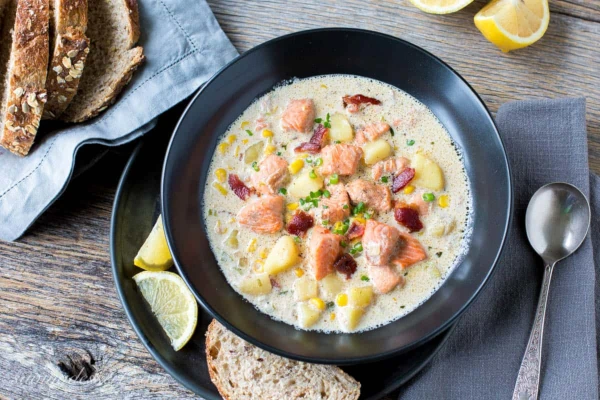

Only Recipes
to matter

Lohikeitto
Lohikeitto or Salmon Chowder is a common dish in the Nordic countries.
It's savoury and comforting, perfect for a cold day.
- 3 diced Potatoes
- 3 diced Carrots
- 1 diced Onion
- 1 teaspoon of Dill
- 2 cups of skinned and boned Salmon
- 1/3 cup of all-purpose Flour
- 2 tablespoons of Butter
- 6 cups of Milk
- Place Potatoes into a large pot and cover with salted water; bring to a boil.
- Reduce heat to medium-low and simmer until tender, about 10 minutes; drain.
-
Fill a saucepan with water, bring water to a boil.
Add Carrots, cover and steam until softened, about 6 minutes.
-
Melt Butter in a large pot over medium heat.
Add Onion; cook and stir until softened, about 5 minutes.
-
Remove from heat; stir in Flour until smooth paste forms.
Return to heat and pour in Milk slowly, stirring constantly.
-
Stir Potatoes, Carrots, Salmon, Dill and Salt & Pepper into the pot.
Cook and stir until the chowder thickens, about 5 minutes.
Reduce heat to low, cover and simmer for 5 minutes.
Back